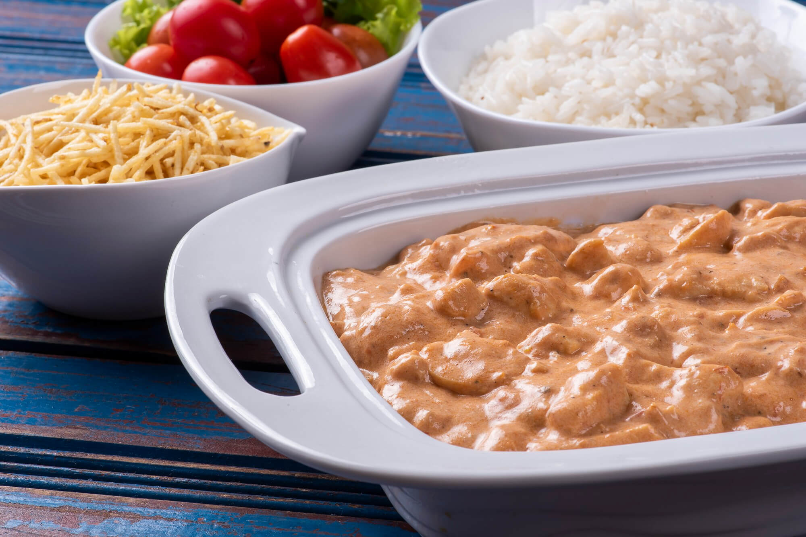

Home
Strogonoff de Frango Simples

Descrição
É tão popular no Brasil que muitas pessoas acham que é um prático nacional, mas na verdade é de origem russa.
Assim como a lasagna, é um práto simples, rápido, e muito prático. Perfeito para uma situação inesperada como uma visita, por exemplo.
Nessa refeita o strogonoff é feito com frango, mas também é muito comum preparar esse prato com carne.
Ingredientes
- 500g de peito de frango
- 1 colher de sopa, de manteiga ou margarina
- 1/2 cebola picada ou ralada
- sal à gosto
- pimenta do reino à gosto
- 1 caixinha de creme de leite (200g)
- 6 colheres de sopa, de ketchup
Passo a Passo
- Corte o peito de frango em cubos pequenos ou tirinhas.
- Coloque em uma panela a manteiga, esquente e coloque a cebola, refogue até dourar.
- Adicione o frango, tempere com sal e pimenta do reino. Deixe dourar bem, adicione 1/2 xícara de água e deixe ferver até a água quase sumir.
- Quando tiver bem pouquinha água adicione o creme de leite e o ketchup, misture, deixe esquentar, prove, e ajuste o tempero, se necessário.
- Sirva quente, acompanhado de arroz branco, batata palha, e uma salada leve.